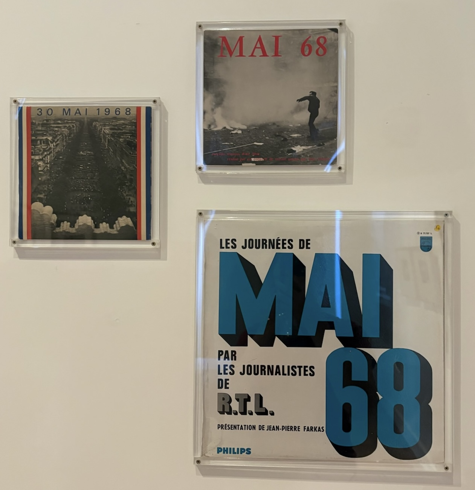
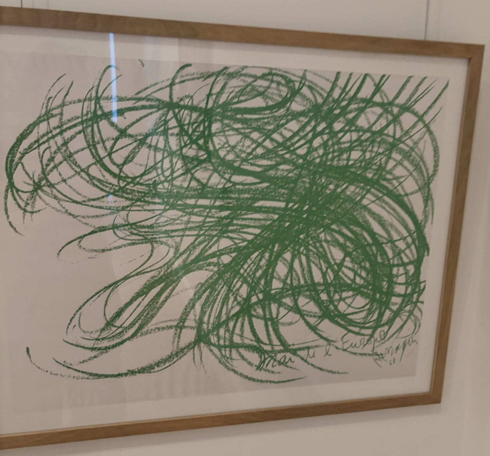
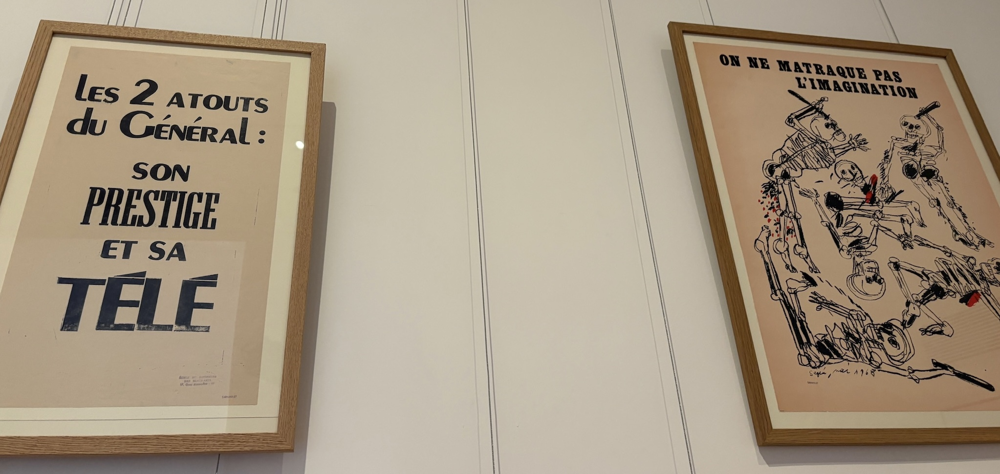

The following pieces can be found in the purple section of the first floor. As you enter one of the last sections of the museum, there is artwork that depicts Paris from the years 1910 to 1977. We will focus on the artwork having to do with the workers' and students' revolts that sparked mass demonstrations in 1961-1962 and then in 1968. Most of these revolts were a flashback to the urban planning operations and road infrastructure that were either planned or actually built in the 1960s-70s in Paris.
Artwork Group 1: Mai 68

Artwork Group 2: Mai 68, Jean Messagier

Artwork Group 3: Political Posters - Atelier Populaire (People's Workshop) & Antonio Seguí

Philosophical Questions
- Many of the May 1968 protesters demanded greater self-liberty and freedom from authority. How do the artworks in this exhibition and those described above express the idea of individual freedom or resistance to government control?
- One of the posters criticizes the use of television to shape public opinion. If access to information influences how people think, how important is free and independent media for protecting self-liberty in a democracy? Do you think mass media still has a similar influence on politics today?
- The slogan “you cannot beat the imagination into submission” on the posters with skeletons suggests that ideas cannot be silenced by force. Do you think art can be an effective form of political protest? Why or why not?